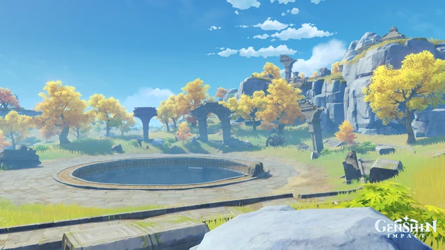

Liyue · Ancient Civilizations
The Guili Assembly
The Guili Assembly was an ancient settlement associated with Guizhong and Morax; fragmentary records trace its destruction during the Archon War and its survivors’ move to Liyue Harbor.

A Liyue Settlement Reconstructed from Records
The Guili Assembly was an ancient settlement in the Guili Plains, associated with Guizhong and Morax. Its history survives in sources that include the World Quest Treasure Lost, Treasure Found, Stone Tablet Compilations, and later recollections. These records do not agree on every point, including the order in which the gods arrived and which community moved to join the other.
The name is connected to Guizhong and Morax, but the name Morax used at the time is not recorded. A precise derivation from his later name should therefore be treated as uncertain.
Guizhong, Morax, and the Four Commandments
Guizhong and Morax were associated with the Guili settlement and its people. The Four Commandments preserved in the ruins emphasize unity of ambition, wisdom, fortitude, and virtue. Soraya uses them to interpret the values the assembly wanted to pass on; they are not a documented law code with the invented contract rules sometimes attributed to them.
Guizhong and the adepti, including Cloud Retainer, are connected to the Guizhong Ballista at Mt. Tianheng, a defense mechanism later modified by Cloud Retainer. The story shows it firing at threats, but the ballista’s existence does not establish every embellished claim sometimes attached to its range or battlefield record.
The Ruins and the Limits of Soraya’s Theory
In Treasure Lost, Treasure Found, Soraya studies stone tablets scattered through the ruins and tries to reconstruct the assembly’s past. She considers the combination of Guizhong’s death and the settlement’s destruction puzzling, given the strength of its protectors. Her suspicion is a scholar’s question, not a confirmed account of a hidden attacker or a specific war with Celestia.
The exact founding sequence, the cause of the decisive battle, and the circumstances of Guizhong’s death remain incompletely recorded. Distinguish Soraya’s hypotheses from statements on the tablets and from later in-game recollections.
The Fall and the Move to Liyue Harbor
The records place the fall of the Guili Assembly during the Archon War, about 3,700 years ago. Guizhong was killed in the conflict and the plains were devastated; a great flood is also associated with the ruin of the area. Morax and the surviving community moved south of Mt. Tianheng, where Liyue Harbor was established.
This broad sequence is clearer than the exact cause or order of events. The Guili ruins preserve a former center of settlement, while the later move links its survivors to the founding history of Liyue Harbor.
This is an original CoreGG reading guide, not an official HoYoverse article or a reproduction of the game text. Source links below identify the records used so you can check the original context.
Sources & references
Check these sources for the original game text and reference trail.